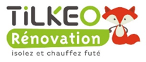
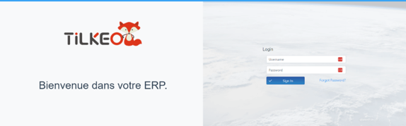
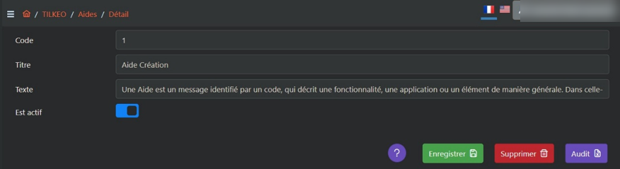
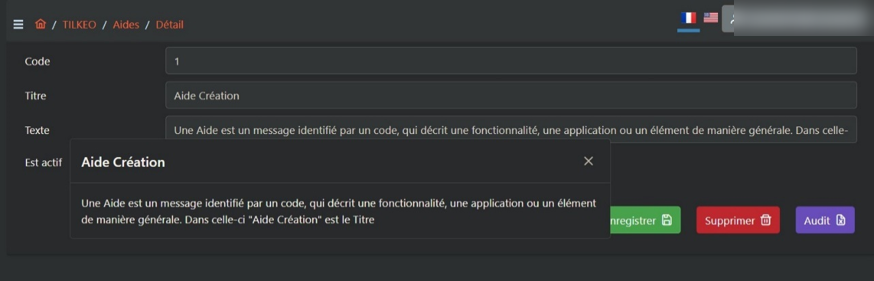
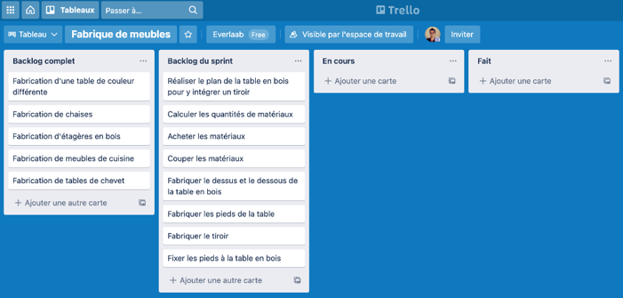

Prospect → after-sales
Contribute to digitising internal processes and maintaining continuity across energy-renovation cases.

Green Dev × TilkeoDS GROUP · CHALON-SUR-SAÔNEI contributed to the group's internal ERP, designed to digitise energy-renovation processes across Tilkeo entities. The platform's ambition was to support the full customer journey, from prospect discovery through project delivery and after-sales service (SAV).
This work was broader than one standalone tool. The internal platform aimed to connect teams and digitise the operational workflow around energy-renovation projects: prospecting, customer and case follow-up, preparation, works, completion and after-sales.
Contribute to digitising internal processes and maintaining continuity across energy-renovation cases.
Directories, HR, equipment, vehicles, inventory, tasks, contextual guidance and price histories supported the group's daily operations.
Estimate household grants using several parameters, including household composition and resource ceilings, and present MPR / CEE amounts.
The captures show the Tilkeo ERP entry screen, administration and contextual help, plus the Kanban project workflow.




Tik’aide estimates renovation grants based on multiple household parameters. The documented screen brings household size, income ceilings and MPR / CEE amounts together for advisers. Django / Python, Vue.js and MySQL were used across backend, interface and data work; help content could also be generated as PDF with ReportLab.
View the Tik’aide case study ↗Technologies and activities grouped from the CV and apprenticeship report.
This experience helped me understand how software can connect a multi-team business process end to end, and how technical choices need to fit the people using the ERP every day.